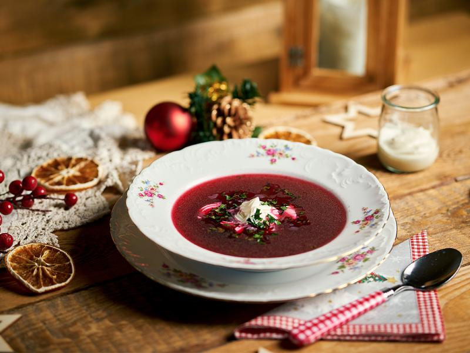
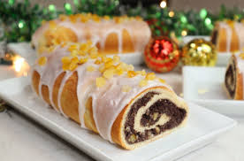
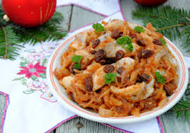
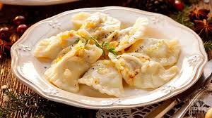

Święta Bożego Narodzenia w Polsce to czas pełen tradycji kulinarnych, które mają swoje głębokie znaczenie i są nieodłącznym elementem rodzinnych spotkań. W Wigilię, która jest jednym z najważniejszych dni w roku, na stole pojawia się dwanaście potraw, symbolizujących pełnię życia i bogactwo. Oto kilka z nich:
-Barszcz czerwony z uszkami
-Karp
-Pierogi
-Śledzie
-Makowiec
-Kompot z suszu



